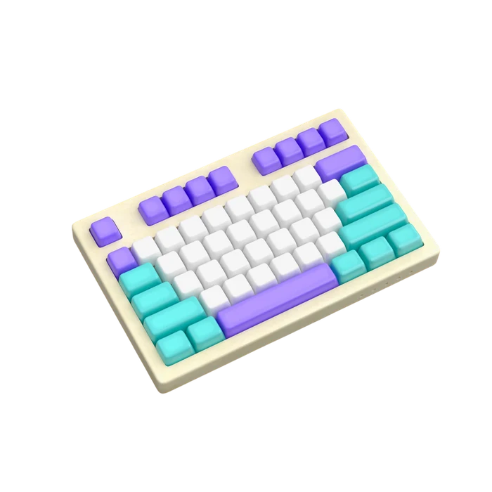
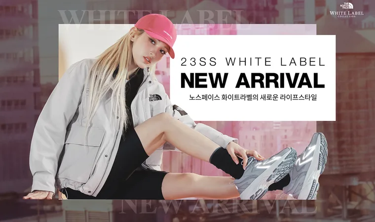
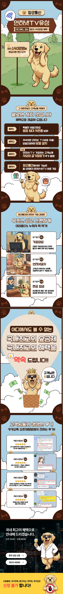
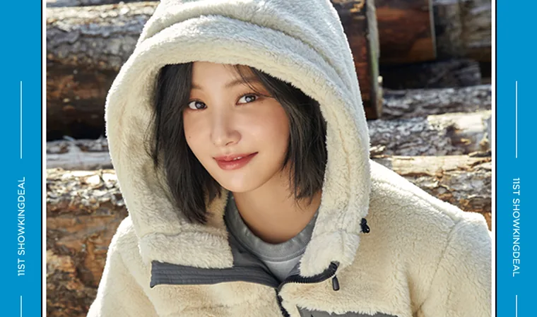

MOVE TO THE NEXT
다음 목표들을 향해 앞으로 나아가고 있는 신입 웹퍼블리셔 김재은입니다.
EXPERIENCE
Career & Education
실무에서 쌓아온 경험과 배움의 기록입니다.
현장에서 마주한 문제들이 지금의 저를 만들었습니다.
CAREER
저의 경력 사항입니다.-
2017.08 ~ 2017.12
태리메디칼
- 이커머스 쇼핑몰 CS업무 및 택배포장
- 의료기기 제품 관련 이벤트 배너 디자인
-
2018.02 ~ 2018.04
아이파크존
- 이커머스 쇼핑몰 CS업무 및 택배포장
- 카메라, 전자 제품 관련 배너 디자인
-
2018.06 ~ 2023.12
리컴퍼니
- 의류브랜드(아웃도어 위주) 제품 상세페이지 제작
- 이커머스 쇼핑몰 이벤트 배너, 이벤트 써머리 제작
- 자사몰 홈페이지 비주얼 콘텐츠 제작
-
2025.10 ~ ING
투브플러스
- 랜딩페이지, 반응형홈페이지 웹디자인 및 웹퍼블리싱
- 병원 홈페이지 유지보수
- 제품 상세페이지 제작
EDUCATION
배움을 이어온 과정입니다.-
2014
서울방송고
방송콘텐츠과 졸업 -
2020
그린컴퓨터아카데미
웹표준/접근성 훈련수료 -
2024
EST 부트캠프
(프론트엔드 개발)
LICENCE
취득한 자격 사항입니다.- 운전면허 보통 2급 2026.01
- GTQ 일러스트 1급 2023.01
- GTQ 포토샵 1급 2022.01
- 웹디자인 기능사 2013.07
SKILLS
Tools & Technologies
디자인부터 퍼블리싱까지 직접 다루는 도구들입니다.
키를 눌러 각 툴의 활용 능력을 확인해 보세요.

PROJECTS
Selected Works
직접 디자인하고 퍼블리싱한 작업물입니다.
카테고리를 선택해 자세히 살펴보실 수 있습니다.



준비 중입니다.
CONTACT
멈추지않고 함께 성장해 나가는 웹퍼블리셔가 되겠습니다.
채용 또는 협업 제안 있으시다면 언제든지 메일로 편하게 말씀주시면 감사드립니다.